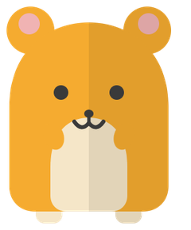

トイレを、もっと使いやすく
やります学校のトイレを、よくしていきます。
これまで：小学校・中学校のトイレを洋式にする目標（80％）を、予定より早く達成しました。
P1-5T「学校のトイレの改善を進めます」／これまで欄「小中学校トイレの洋便器化 80％を前倒し達成」このページは 【発行者名：要確認】 がつくりました。市役所のページではありません。
場所をタッチすると、ハム太が歩いていくよ。

絵の地図です。本物の場所・きょりとはちがいます。
6つの場所のうち、0か所を見たよ
ハム太ぼく、ハム太。小金井の まちを いっしょに 歩こう！ 行きたい 場所を タッチしてね。
学校のトイレを、よくしていきます。
大学や専門学校とも力を合わせます。
P1-5「部活動を地域に広げます。大学・専門学校などとの連携を強めます」学ぶ場所としてよくしながら、地域の交流や防災、子育てにも使える場所にします。
P1-6学校に行きづらい子や、字を読んだり書いたりするのがむずかしい子の学びを手伝います。
P1-7「不登校の子どもとその家庭、文字の読み書きに困難がある子どもなどに、学びの支援をします」（取り組みます）学校に行きづらい子が、自分に合った学び方で通える学校（学びの多様化学校）をつくるかどうかを考えます。
P1-8「…学校に行きづらい子どもが、自分に合った学び方で通える学校（学びの多様化学校）の設置を検討します」（検討します）障害のある子も、いっしょに遊べる公園づくりを進めます。
公園や市の建物を、いろいろな人が出会う場所として使います。
P2-2「公園や公共施設を、交流の場として活用します」若い人の居場所や、自習スペースをふやします。
P1-9「若者の居場所や自習スペースを増やします」東小金井駅にも、たばこを吸う場所をつくって分けます。
P2-5まちのあちこちに、ベンチをふやします。
P2-3CoCoバスの路線を守り、乗る人がふえるようにします。
P2-4「コミュニティバス（CoCoバス）の路線を維持し、利用を促します」自転車の使い方の計画をつくり、事故を減らすよびかけを強めます。
P3-5「…啓発活動を強めます」ごみの分け方をわかりやすくします。生ごみを、もう一度使える資源にすることや、リサイクル・リユースを進めます。
P6-4「ごみの分別をわかりやすくします。生ごみの資源化、リサイクル・リユースを進めます」学校が始まる前の朝の時間に、小学生がいられる場所をつくるかどうかを考えます。
P1-4の後半のみ「ティーンズ会議」を開くなどして、若い人の意見を生かします。
気候変動（地球の気温や天気のようすが、長い時間をかけて変わっていくこと）について、若い人が話し合う「わかもの気候市民会議」をつづけます。
P6-5「気候変動の問題について若者が話し合う「わかもの気候市民会議」を続けます」。（ ）内の説明は当方で追加・要確認